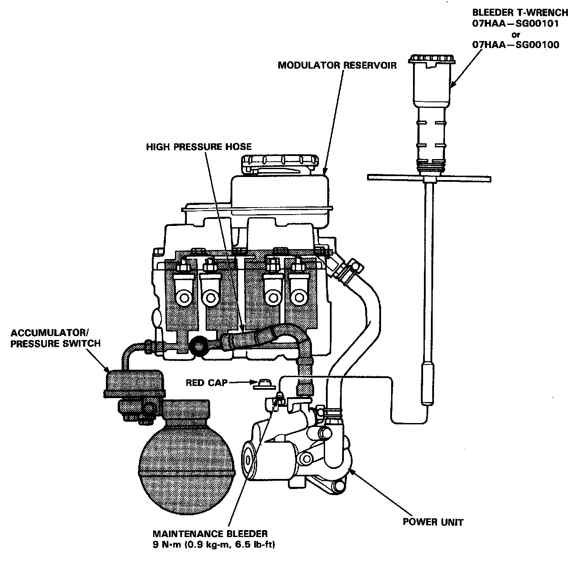

Relieving Accumulator/Line Pressure

Hydraulic System
Relieving Accumulator/Line Pressure:
WARNING: Use the Bleeder T-wrench before disassembling the parts shaded in the illustration.
1. Drain the brake fluid from the master cylinder and modulator reservoir thoroughly
2. Remove the red cap from the bleeder on the top of the power unit.
3. Install the special tool on the bleeder screw and turn it out slowly 90° to collect high pressure fluid into reservoir. Turn the special tool out one complete turn to drain the brake fluid thoroughly.
4. Retighten the bleeder screw and discard the fluid.
5. Reinstall the red cap.